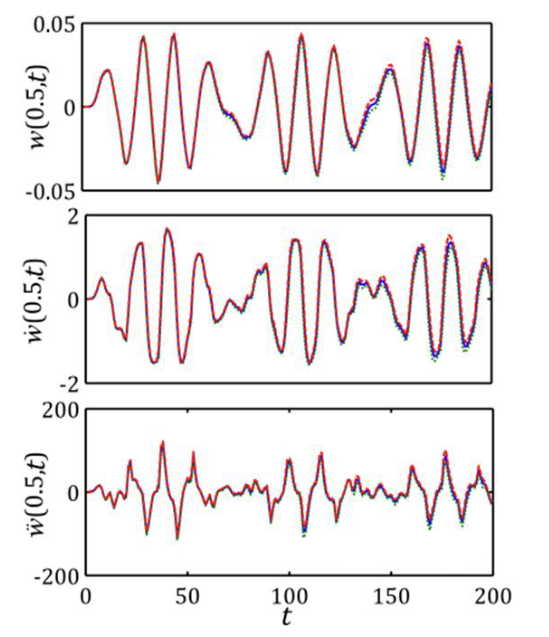

Statistical analysis of random uncertainty in the pipes conveying multi-phase flow based on nonlinear dynamic model
Modares Mechanical Engineering (in Persian, National Journal), 15(8), pp.323-331, 2015. Journal Article

Abstract
There are many researches on the vibration behavior of the multi-phase flow in the pipes. However, there isn’t any general statistical study on the dynamic response of such systems. Therefore in this paper, at the first step, the nonlinear equation governing the transverse vibration of the pipe is derived using the Hamilton's principle. The nonlinearity in the system is induced by considering large deflections. The interaction between the pipe and the multi-phase fluid flow and the resultant uncertainty is modeled by random excitation which is produced by using normal distribution function. After extraction of the governing equation and discretizing it by the Galerkin method, the equations are solved numerically. The statistical parameters of the response have been extracted by Monte-Carlo simulation. With studying on the deflection of one point on the pipe and also considering corresponding upper and lower limit band (confidence interval), extended results of uncertainties effects have been obtained. The results show that with increasing the velocity of the fluid, the uncertainty of the response is decreasing. Also by considering nonlinear model, the probabilities of failure are increased.